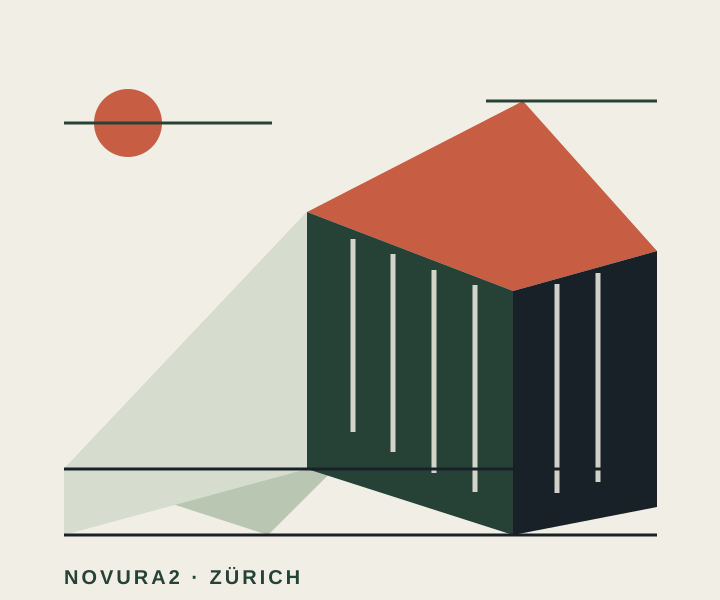

Immobilien & Bauland
Kauf, Verwaltung und Verkauf von Liegenschaften und Bauland bilden einen zentralen Teil der Tätigkeit.
Zürich · Immobilien & Entwicklung
Novura2 AG verbindet Immobilien und Bauland mit Projektentwicklung und Bauausführung – mit einem klaren Blick auf Ort, Nutzung und Zukunft.

Unser Fokus
Novura2 AG ist im Raum Zürich rund um Immobilien, Bauland und Bauvorhaben tätig. Im Mittelpunkt steht die Verbindung von Immobilienkompetenz mit Entwicklung und Umsetzung.
So entsteht ein Tätigkeitsfeld, das Bestandesimmobilien und Grundstücke ebenso umfasst wie die Entwicklung und Ausführung von Bauprojekten.
Leistungsfelder
Kauf, Verwaltung und Verkauf von Liegenschaften und Bauland bilden einen zentralen Teil der Tätigkeit.
Die Entwicklung von Bauvorhaben verbindet Grundstücke und Immobilien mit einer neuen Nutzungsperspektive.
Die Ausführung von Bauvorhaben ergänzt die Entwicklung und verbindet Planung mit Umsetzung.
Über Novura2
Novura2 AG ist eine Zürcher Gesellschaft mit einem Fokus auf Immobilien, Bauland, Projektentwicklung und die Ausführung von Bauvorhaben.
Nina Flückiger ist Mitglied des Verwaltungsrates von Novura2 AG.
Kontakt
Auf dieser Seite werden derzeit keine öffentlichen Telefon- oder E-Mail-Kontaktdaten veröffentlicht. Die eingetragene Zustelladresse und die rechtlichen Unternehmensangaben finden Sie im Impressum.